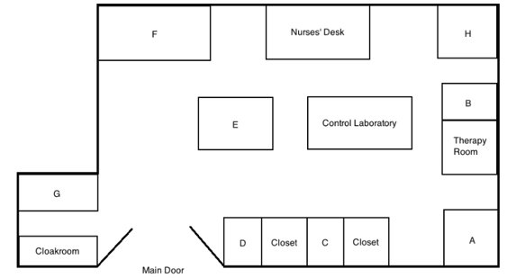

Hello, and welcome to the home page for the Healthy Hearing Medical Clinic and Surgery, where we’d like to share a little more information about the services we provide and more.
Our hospital is one of the leading specialised hospitals in the United Kingdom, attracting the very best healthcare professionals from around the globe. Not only are we a leading medical practice, but we are also the only hospital in the United Kingdom dedicated entirely to the treatment of, and research into the curing of hearing loss. Our facilities and staff here are renowned across Europe, attracting thousands of patients a year. Our consultations can number anything up to 11,000 patients a year, however we aim to treat around 5,000 patients a year so as to maintain and ensure the quality of our services (Q11). Our patients are guaranteed the highest standard of care, as well as the use of our first class facilities. All patients requiring overnight treatment are provided with their own private room with en-suite facilities, as well as a state-of-the-art entertainment centre, which includes a flat screen LCD television and Playstation.
Appointments with our healthcare professionals can be made at any time during the week, with female doctors available between 8 am and 11 am (Q12). If you need to see a doctor outside of these times, please visit the ‘Out of Hours’ page of our website for more information. Our doctors are all trained to an exceptionally high standard, and practice a vast array of specialties: Mr. Robert is a fully qualified ear and throat specialist, Mr. Edwards is a pediatric hearing specialist, while Mr. Green specialises in reversing hearing loss (Q13). For more details about our people, please visit the ‘Staff Members’ page on our website.
During a consultation, doctors will sometimes decide medication is required, for which patients should receive a prescription. There are several pharmacies within the city; however we recommend that patients use the pharmacy housed within our health care facility (Q14). Our in-house pharmacy is well-stocked at all times, our products are competitively priced, and our pharmacists are on hand to help and advise from 8 am until 10 pm from Monday to Saturday, and from 9 am until 12 pm on Sundays. If you require any help outside of these hours, please see our ‘Out of Hours’ page on the website.
Since the Healthy Hearing Medical Clinic and Surgery also functions as a teaching hospital, we aim to provide our students with every opportunity to expose themselves to medicine in practice. Therefore we would like to encourage our patients to give their consent for a medical student to attend their consultations (Q15). If our patients are not comfortable with this, there will be a form at reception where patients will be able to opt out.

Now, please look at the map I’ve given you of the Healthy Hearing Medical Clinic and Surgery. For those not familiar with our practice, reception can be found through the main door at the end of the corridor (Q16). If your consultation is booked with Mr. Green, you need to go through the main door and turn right by the nurses’ desk, and his office is at the end of the corridor on your left-hand side (Q17). If you need to alter any of your personal details, please visit our secretary at the Office for Medical Records, which you will find next to the therapy room (Q18). If you’re awaiting surgery, please first check in with reception, before taking the first door on the right after you enter the clinic. (Q19)
Finally, in the event that you feel disappointed with any of the services we have provided, or have any further questions, please locate our Manager’s Office, which can be found near the Office for Medical Records and between two closets. (Q20)
If you have any more questions about the Healthy Hearing Medical Clinic and Surgery, please do not hesitate to contact us on 01256 111 111. [fade out]